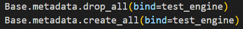
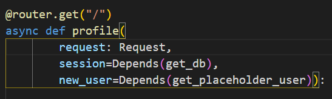

ע"מ לבצע טסטים בהצלחה ובלי לגרום לשיבושים בDB אמיתי - בקובץ conftest.py קיימת פונקציה שיוצרת את הsession לבסיס נתונים לצורך הטסטים.
אני רוצה לבצע טסט לrouter שיצרתי.
ניתן להגדיר את ראוטר כ- Path operator
כלומר אופרטור נתיבים או מנהל נתיבים של האפליקציה.
ראוטר app שיצרנו בקובץ main הוא בעצם מנהל נתיבים ראשי שאליו ניתן למזג ראוטרים אחרים.
חלוקה של ניהול נתיבים בין מספר ראוטרים מאפשרת לייצר סביבת עבודה נקייה ומסודרת.
הrouter שאני הולך לבדוק משתמש בפונקציה get_db שיוצרת session של בסיס נתונים אמיתי.
בשביל להעביר את הget_test_db במקום get_db לrouter כל מה שצריך לעשות זה להעביר את get_db לתוך
path operation function (פונקציה של הrouter) ע"י פונקציה מיוחדת Depends, לדוגמא:
(בהמשך אסביר מה עושה Depends)
בנוסף יש לצור test client בתוך קובץ conftest.py שידע להעביר לפונקציה Depends את הget_test_db:
לצורך זה עלינו לייבא את הapp שיצרנו בקובץ main
from app.main import app
עכשיו עלינו לעדכן את הapp שידע להעביר את הget_test_db לתוך router:
נצור את בסיס נתונים לצורך טסטים עם test_engine

ע"י שורת קוד:
app.dependency_overrides[profile.get_db] = get_test_db
נוצר מילון:
{get_db: get_test_db}
עכשיו נשאר לנו רק להחזיר את הtest client עצמו ולהעביר לתוך פונקציית טסט:
with TestClient(app) as client:
yield client
בסוף ריצת הטסט כדאי לאפס את מילון dependencies
app.dependency_overrides = {}
מה שקורה בהרצת הטסט זה שכשהפונקציה תרוץ, Depends תבדוק קודם האם יש לה הגדרות בתוך מילון
app.dependency_overrides, במקרה שלנו Depends תזהה שבמקום get_db יש להשתמש בget_test_db
ותצור session של בסיס נתונים שיצרנו עבור הטסטים.
כמו שניתן לראות מהדוגמא אותו הדבר אפשר לעשות עם פונקציות אחרות,
ולבצע טסט על פונקציות שנוצרו לצורך טסט במקום פונקציות מקוריות.



{kind=link}
{kind=link}
{kind=link}